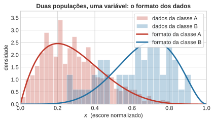
Dados, Distribuições e Detecção de Anomalias
Aula 1 — Fundamentos Estatísticos do Aprendizado Supervisionado
1 Proposta do Curso
Este curso não busca ensinar algoritmos novos. Mas sim o que os algoritmos que você já usa realmente estão fazendo. A tese, em uma frase: todo algoritmo supervisionado é a composição de três peças — uma suposição distributiva, uma verossimilhança e uma regra de decisão. Este curso busca compreender essas três peças e como elas se combinam para formar o algoritmo completo. A consequência prática é que, quando um modelo falha, a pergunta deixa de ser “qual hiperparâmetro eu ajusto?” e passa a ser “qual das três peças está errada?”. Quase sempre é a primeira — a suposição distributiva.
Aprendizado supervisionado, na formulação mínima: existe um par \((x, y)\) com \(x \in X\) e um rótulo \(y\), existe uma distribuição conjunta desconhecida \(p(x, y)\), e dispomos de uma amostra \(\mathcal{D} = \{(x_n, y_n)\}_{n=1}^{N}\). Queremos uma função \(f : X \to Y\) que preveja \(y\) a partir de \(x\) com erro pequeno. Quando \(Y \in \mathbb{N}\) é finito, chamamos de classificação; quando \(Y \subseteq \mathbb{R}\), de regressão. A diferença entre os dois casos é menor do que parece — ela está quase inteiramente na escolha da distribuição do resíduo \(Y - f(X)\).
Nota importante, quando usamos a variável em minúsculo \(x\) ou \(y\), estamos nos referindo a uma realização da variável aleatória. Quando usamos a variável em maiúsculo \(X\) ou \(Y\), estamos nos referindo à própria variável aleatória. Logo \(Y - f(X)\) é uma variável aleatória.
A escolha de tratar o assunto estatisticamente e não algoritmicamente tem uma consequência prática imediata: quando um modelo falha, a pergunta deixa de ser “qual hiperparâmetro eu ajusto?” e passa a ser “qual das três peças está errada?”.
Bibliografia principal. Bishop, C. M. (2006), Pattern Recognition and Machine Learning, Springer — referido como PRML. Bishop, C. M. & Bishop, H. (2024), Deep Learning: Foundations and Concepts, Springer — referido como DLFC. As duas referências são usadas em paralelo ao longo do curso; quando divergem em notação ou ênfase, a divergência é apontada explicitamente.
A aula de hoje abre com uma pergunta cuja resposta parece óbvia e não é:
O que exatamente significa “aprender a distribuição dos dados”?
2 Distribuições, classificação e erros
2.1 O que é uma distribuição
Considere duas populações medidas em uma única variável \(x\) — pense em um escore normalizado, de modo que \(x \in [0,1]\). Cada população produz um histograma, e sobre cada histograma podemos desenhar uma curva suave que acompanha o formato do histograma. Neste momento a definição operacional é deliberadamente pobre:
Uma distribuição é o formato que os dados assumem no espaço.
Nada além disso, por enquanto. Não há fórmula, não há família paramétrica, não há nome próprio. A curva é um resumo geométrico do histograma. Toda a maquinaria — famílias, parâmetros, estimadores — virá depois, e virá quando fizer falta.
Vale notar já o que a curva não é. Ela não é uma probabilidade: a altura da curva em um ponto não é “a chance de \(x\) valer aquilo”. Voltaremos a esse ponto com cuidado no Bloco 2, porque ele causa confusão real.
A mesma ideia sobrevive intacta em duas dimensões. O histograma vira uma nuvem de pontos e a curva vira um conjunto de curvas de nível. O objeto é o mesmo; só a dimensão do espaço mudou.
Duas observações a guardar, ambas sementes de aulas futuras. Primeira: em duas dimensões ainda dá para desenhar, e o desenho continua informativo. Segunda: em vinte dimensões não dá — e o problema não é apenas gráfico. Estimar o formato de uma nuvem em \(\mathbb{R}^{20}\) com dados finitos é um problema qualitativamente diferente, o que vamos discutir em aulas futuras.
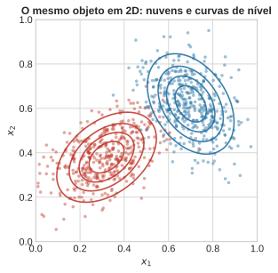
2.2 Classificação e o problema da discretização/corte
De volta a uma dimensão. As duas curvas se sobrepõem em uma faixa central. Um ponto que cai nessa faixa poderia ter vindo de qualquer uma das duas populações.
Suponha que você precise decidir, para cada novo \(x\), se ele veio de A ou de B. A regra mais simples possível é um limiar: escolher um valor \(t\) e declarar “classe A” quando \(x \le t\), “classe B” quando \(x > t\).
A pergunta: onde você corta?
Antes de continuar, responda. A resposta que quase toda turma dá é no ponto em que as duas curvas se cruzam. É uma resposta com boa aparência: é o ponto onde “as duas populações são igualmente plausíveis”, e ele tem a virtude de ser simétrico e de não exigir arbitragem.
Anote essa resposta. Ela está errada, e o resto do bloco existe para mostrar por quê e para mostrar qual é a correção.
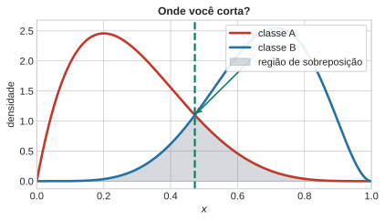
2.3 Tipos de erros
Fixado o corte no cruzamento, existem exatamente dois tipos de erro, e eles correspondem a duas áreas na figura:
- pontos da classe A que caem à direita do corte e são declarados B;
- pontos da classe B que caem à esquerda do corte e são declarados A.
O vocabulário vem em duas camadas — primeiro a intuitiva, depois a técnica:
| Intuitivo | Técnico | Também chamado |
|---|---|---|
| alarme falso | erro Tipo I | falso positivo |
| escape, o que passou batido | erro Tipo II | falso negativo |
Advertência necessária. Os rótulos “Tipo I” e “Tipo II” não são propriedades da figura. Eles só ficam definidos depois que você declara qual classe é a hipótese nula. Em detecção de anomalia a convenção é natural: a nula é “normal”, e portanto o alarme falso é sinalizar anomalia onde não havia. Em um problema simétrico — dois dígitos manuscritos, duas espécies — a atribuição é pura convenção e precisa ser anunciada antes do uso, sob pena de a discussão inteira ficar ambígua. Nesta aula fixamos: A é a nula (normal), B é a alternativa (anômala).
O primeiro resultado real da aula é geométrico, não algébrico. Olhe as duas áreas hachuradas e mova o corte mentalmente:
Deslocar \(t\) para a esquerda aumenta a área de alarme falso e diminui a área de escape. Deslocar para a direita faz o oposto. Não existe \(t\) que zere as duas.
Esse é o compromisso fundamental da decisão sob sobreposição, e ele não é uma limitação do método: é uma propriedade das distribuições. Enquanto houver sobreposição, haverá erro irredutível — o chamado erro de Bayes. Nenhum classificador, por mais sofisticado, o elimina. Uma rede neural com um bilhão de parâmetros aplicada a este problema unidimensional não erra menos do que o melhor limiar; ela apenas gasta mais para chegar ao mesmo lugar.
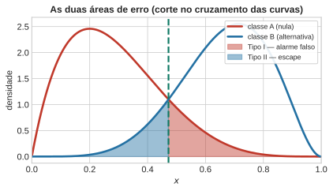
A figura seguinte torna o compromisso quantitativo: para cada posição do corte, a fração de cada tipo de erro. As duas curvas são monótonas em direções opostas e não se anulam simultaneamente em ponto algum do domínio.
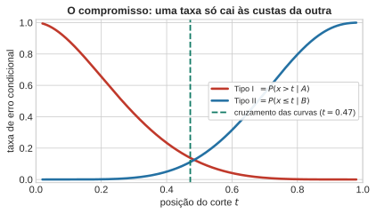
2.4 A conta que desmente a intuição
Até aqui uma informação foi omitida de propósito: as duas classes não são igualmente frequentes. Na amostra simulada há 950 pontos da classe A e 50 da classe B, num total de 1.000. A razão é 19 para 1.
Isso não muda nada nas curvas desenhadas — elas descrevem cada classe isoladamente, e continuam válidas. Mas muda tudo na contagem de erros, porque a contagem é feita sobre a amostra inteira, e nela A é dezenove vezes mais numerosa.
Vamos contar os erros de verdade, sobre os pontos simulados, em duas posições do corte: no cruzamento das curvas, que foi a resposta da turma, e num corte deslocado para a direita.
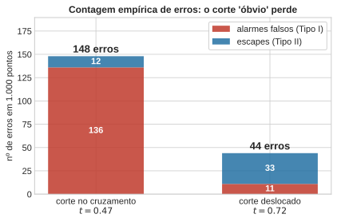
O corte deslocado erra muito menos. E ele não foi escolhido por tentativa e erro: sai de um princípio, que é o assunto do próximo passo.
O desconforto aqui é o ponto pedagógico. A resposta “corte no cruzamento” era intuitivamente óbvia, tinha justificativa verbal razoável — “é onde as duas são igualmente plausíveis” — e os dados acabaram de desmenti-la. Vale registrar exatamente onde a justificativa verbal falhou: igualmente plausíveis estava sendo confundido com igualmente prováveis. São coisas diferentes, e a diferença é a frequência das classes.
3 Regra do Produto, Marginais e Teorema de Bayes
Antes de corrigir a fronteira de decisão, precisamos formalizar a linguagem. Todas as probabilidades e densidades manipuladas nesta aula derivam de apenas duas regras fundamentais da teoria de probabilidade: a Regra da Soma e a Regra do Produto (PRML §1.2, pp. 14–24; DLFC §2.1.2, pp. 26–28).
3.1 Um pouco de teoria de probabilidade
Considere duas variáveis aleatórias: uma variável contínua \(X \in \mathcal{X}\) (as nossas medições) e uma variável discreta \(Y \in \{\mathcal{C}_1, \dots, \mathcal{C}_K\}\) (os rótulos de classe).
3.1.1 Distribuição Conjunta: \(p(x, \mathcal{C}_k)\)
A distribuição conjunta descreve a probabilidade de duas coisas acontecerem simultaneamente: a observação pertencer à classe \(\mathcal{C}_k\) e o valor medido cair nas proximidades de \(x\).
- Em termos geométricos, é a curva (ou superfície) que leva em conta tanto o formato dos dados quanto a frequência relativa da classe no espaço original de amostragem.
3.1.2 Distribuição Condicional: \(p(x \mid \mathcal{C}_k)\) e \(p(\mathcal{C}_k \mid x)\)
A distribuição condicional descreve o comportamento de uma variável dado que a outra é fixada ou conhecida:
- \(p(x \mid \mathcal{C}_k)\) é a densidade condicional de classe (ou verossimilhança): responde “sabendo que a observação vem da classe \(\mathcal{C}_k\), qual é a distribuição dos valores \(x\)?”.
- \(p(\mathcal{C}_k \mid x)\) é a probabilidade a posteriori: responde a pergunta inversa e crucial do aprendizado supervisionado — “dado que observei o valor \(x\), qual é a probabilidade de ele ter vindo da classe \(\mathcal{C}_k\)?”.
3.1.3 Distribuição Marginal: \(p(x)\)
A distribuição marginal (ou evidência) representa a distribuição de \(X\) ignorando a qual classe cada ponto pertence. Obtemos a marginal somando (ou integrando) a conjunta sobre todos os estados da outra variável (Regra da Soma):
\[ p(x) \;=\; \sum_{j=1}^{K} p(x, \mathcal{C}_j) \;=\; \sum_{j=1}^{K} p(x \mid \mathcal{C}_j)\,p(\mathcal{C}_j). \]
3.1.4 A Regra do Produto e o Teorema de Bayes
A Regra do Produto relaciona a conjunta às condicionais e prioris:
\[ p(x, \mathcal{C}_k) \;=\; p(x \mid \mathcal{C}_k)\,p(\mathcal{C}_k) \;=\; p(\mathcal{C}_k \mid x)\,p(x). \]
Igualando as duas formas de reescrever a distribuição conjunta e isolando a posteriori \(p(\mathcal{C}_k \mid x)\), obtemos o Teorema de Bayes:
\[ \boxed{\;p(\mathcal{C}_k \mid x) \;=\; \frac{p(x \mid \mathcal{C}_k)\,p(\mathcal{C}_k)}{p(x)} \;=\; \frac{p(x \mid \mathcal{C}_k)\,p(\mathcal{C}_k)}{\sum_{j} p(x \mid \mathcal{C}_j)\,p(\mathcal{C}_j)}\;} \]
A leitura dos quatro papéis do Teorema de Bayes:
- Priori \(p(\mathcal{C}_k)\): O conhecimento sobre a prevalência da classe antes de medir \(x\).
- Verossimilhança \(p(x \mid \mathcal{C}_k)\): A compatibilidade da medição \(x\) com a classe \(\mathcal{C}_k\).
- Evidência \(p(x)\): Um fator de normalização que garante que \(\sum_k p(\mathcal{C}_k \mid x) = 1\).
- Posteriori \(p(\mathcal{C}_k \mid x)\): A incerteza atualizada sobre a classe após observar a evidência \(x\).
3.2 A importancia da priori e Bayes
Por que o corte no cruzamento falhou? Porque as curvas que desenhamos descrevem o formato de cada classe isoladamente. Elas respondem à pergunta “se o ponto veio de A, onde ele tende a cair? (\(P(x \mid \mathcal{C}_A)\))”. Não respondem à pergunta que importa, que é “de onde este ponto veio? (\(P(\mathcal{C}_k \mid x)\))”.
Para responder à segunda pergunta é preciso incorporar a informação que estava faltando: uma das classes é dezenove vezes mais frequente. A correção é literalmente escalar cada curva pela frequência da sua classe e cortar no cruzamento das curvas escaladas.
Agora, com os objetos já em cima da mesa, vale nomeá-los.
- A frequência de cada classe é a priori: \(\pi_k = p(\mathcal{C}_k)\), com \(\pi_A = 0{,}95\) e \(\pi_B = 0{,}05\).
- A curva isolada é a densidade condicional de classe: \(p(x \mid \mathcal{C}_k)\).
- A curva escalada é a conjunta: \[p(x, \mathcal{C}_k) \;=\; p(x \mid \mathcal{C}_k)\, \pi_k .\]
- Decidir pela conjunta maior é decidir pela posteriori maior, porque \[p(\mathcal{C}_k \mid x) \;=\; \frac{p(x \mid \mathcal{C}_k)\,\pi_k}{p(x)}\] \[\qquad\text{e } p(x) = \sum_j p(x \mid \mathcal{C}_j)\,\pi_j \text{ não depende de } k .\]
A prova de que o cruzamento das conjuntas é ótimo
Uma regra de decisão binária é uma partição \(\mathcal{X} = \mathcal{R}_A \cup \mathcal{R}_B\), com \(\mathcal{R}_A \cap \mathcal{R}_B = \emptyset\). A probabilidade de erro é (PRML, eqs. 1.78–1.79, pp. 39–40)
\[ p(\text{erro}) = \int_{\mathcal{R}_A} p(x, \mathcal{C}_B)\,\mathrm{d}x + \int_{\mathcal{R}_B} p(x, \mathcal{C}_A)\,\mathrm{d}x . \]
Cada ponto \(x\) contribui para exatamente uma das duas integrais, e a escolha de qual delas é livre e independente ponto a ponto. Logo o mínimo é obtido atribuindo cada \(x\) à região cuja contribuição é menor:
\[ x \in \mathcal{R}_A \iff p(x, \mathcal{C}_A) > p(x, \mathcal{C}_B) \iff p(\mathcal{C}_A \mid x) > p(\mathcal{C}_B \mid x). \]
A fronteira ótima é, portanto, o conjunto \(\{x : p(x,\mathcal{C}_A) = p(x,\mathcal{C}_B)\}\) — o cruzamento das conjuntas. Em termos de razão de verossimilhanças, a mesma condição é
\[ \frac{p(x \mid \mathcal{C}_B)}{p(x \mid \mathcal{C}_A)} \;=\; \frac{\pi_A}{\pi_B} \;=\; 19 , \]
o que explica quantitativamente por que o corte se deslocou tanto para a direita: só vale declarar B quando a evidência a favor de B for dezenove vezes mais forte, porque B é dezenove vezes mais rara.
Note o que o argumento não usou: nenhuma família paramétrica, nenhuma suposição de normalidade, nenhuma condição de regularidade além da existência das densidades. O resultado é geral.
Referência para a figura. PRML, Figura 1.24, p. 40, e §1.5.1, pp. 39–41. Atenção ao ler: essa figura plota as conjuntas, não as condicionais. Essa é exatamente a distinção que este bloco construiu, e é por isso que a figura só faz sentido depois do percurso, e não antes.
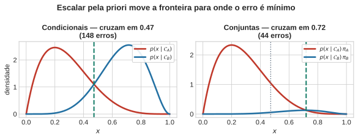
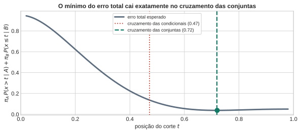
3.3 Exemplo: triagem médica
O mesmo fenômeno, agora no caso discreto e num contexto familiar. O exemplo é de DLFC §2.1.1, pp. 25–26, retomado em §2.1.4, p. 30.
Uma doença tem prevalência de 1 em 100. Um teste detecta a doença em 90% dos doentes (\(\text{sensibilidade} = 0{,}90\)) e produz resultado positivo em 3% dos saudáveis (\(\text{falso positivo} = 0{,}03\)). Uma pessoa testa positivo. Qual a probabilidade de que esteja doente?
\[ \begin{aligned} p(D \mid +) &= \frac{p(+ \mid D)\,p(D)}{p(+ \mid D)\,p(D) + p(+ \mid \bar{D})\,p(\bar{D})}\\ & = \frac{0{,}90 \times 0{,}01}{0{,}90 \times 0{,}01 + 0{,}03 \times 0{,}99}\\ & = \frac{0{,}0090}{0{,}0387} \approx 0{,}233 . \end{aligned} \]
Cerca de 23% — não 90%, que é a resposta que a maioria dá. A intuição falha aqui exatamente como falhou no Passo 4, e pela mesma razão: a verossimilhança \(p(+ \mid D) = 0{,}90\) é alta, mas a priori \(p(D) = 0{,}01\) é baixíssima, e o produto é o que decide.
Em contagens absolutas, sobre 10.000 pessoas: 100 doentes, das quais 90 testam positivo; 9.900 saudáveis, das quais 297 testam positivo. Total de 387 positivos, 90 dos quais realmente doentes — 23%.
Esta é a segunda aparição do mesmo fenômeno em poucos minutos, e não a primeira. É por isso que ela funciona: a turma já sabe que a raridade da classe muda a conclusão, e aqui apenas reencontra o fato no caso discreto.
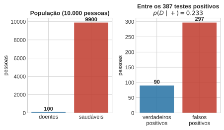
4 Propriedades de Distribuições Contínuas
Antes de tratar a Beta em detalhe, precisamos formalizar as ferramentas matemáticas que nos permitem caracterizar, comparar e ajustar uma variável aleatória contínua \(X \in \mathcal{X} \subseteq \mathbb{R}\).
4.1 Densidade vs. Probabilidade
Para uma variável aleatória contínua, a probabilidade de um valor exato é zero (\(P(X = x) = 0\)). O objeto fundamental é a função densidade de probabilidade (PDF) \(p(x)\) (DLFC §2.2, pp. 32–33):
\[ P(a \le X \le b) = \int_a^b p(x)\,\mathrm{d}x, \qquad p(x) \ge 0, \qquad \int_{-\infty}^{\infty} p(x)\,\mathrm{d}x = 1. \]
Duas consequências imediatas essenciais para o resto do curso:
A densidade pode exceder \(1\): A restrição de integração a 1 limita a área, não a altura. Uma distribuição Uniforme no intervalo \([0, 0{,}01]\) possui densidade constante \(p(x) = 100\). Aqui está o trecho com a formatação original em Markdown, sem as tags do LaTeX, pronto para você substituir no seu documento Quarto:
Mudança de variável e o Jacobiano: Diferente de uma probabilidade discreta, a densidade se altera quando “esticamos” ou “encolhemos” o espaço para garantir que a probabilidade total (a área sob a curva) seja preservada. Se \(y = g(x)\) for uma transformação bijetora e diferenciável, a probabilidade em um pequeno intervalo deve ser a mesma nos dois espaços: \(p_Y(y)\,\mathrm{d}y = p_X(x)\,\mathrm{d}x\). Isolando \(p_Y(y)\), obtemos a regra da mudança de variável, que inclui o Jacobiano (o fator que mede a distorção do espaço):
\[p_Y(y) \;=\; p_X\big(g^{-1}(y)\big) \left\vert{} \frac{\mathrm{d}g^{-1}(y)}{\mathrm{d}y} \right\vert{}.\]
Exemplo prático: Seja \(X\) uma variável com densidade uniforme no intervalo \([0, 2]\), ou seja, \(p_X(x) = 0{,}5\). Se aplicarmos a transformação quadrática \(y = x^2\) (bijetora para \(x \ge 0\)), a função inversa é \(x = \sqrt{y}\). A derivada é \(\frac{\mathrm{d}x}{\mathrm{d}y} = \frac{1}{2\sqrt{y}}\). A nova densidade não é apenas o valor antigo realocado, mas sim multiplicada pela distorção:
\[p_Y(y) \;=\; 0{,}5 \times \left\vert{} \frac{1}{2\sqrt{y}} \right\vert{} \;=\; \frac{1}{4\sqrt{y}} \quad \text{para } y \in (0, 4].\]
O problema da moda: O exemplo acima mostra que uma densidade constante (plana) se transformou em uma curva que diverge perto de \(y=0\). Por carregar este Jacobiano, a moda de uma densidade não é invariante a reparametrizações. O pico da distribuição muda de lugar dependendo de como o espaço é medido, enquanto a decisão discreta de classificação (\(\arg\max_k p(\mathcal{C}_k \mid x)\)) permanece imune a isso.
4.2 Resumos Populacionais: Os Momentos
Os momentos são resumos numéricos que descrevem a localização, dispersão e forma da densidade \(p(x)\).
- Momento de Ordem \(k\) (em relação à origem): \[ \mu_k' = \mathbb{E}[X^k] = \int_{-\infty}^{\infty} x^k p(x)\,\mathrm{d}x. \]
- Primeiro Momento (Média / Valor Esperado): \(\mu = \mathbb{E}[X]\). Define o centro de massa da distribuição.
- Momentos Centrais de Ordem \(k\) (em relação à média): \[ \mu_k = \mathbb{E}[(X - \mu)^k] = \int_{-\infty}^{\infty} (x - \mu)^k p(x)\,\mathrm{d}x. \]
- Segundo Momento Central (Variância): \(\sigma^2 = \operatorname{Var}[X] = \mathbb{E}[(X - \mu)^2] = \mathbb{E}[X^2] - \mu^2\). Mede a dispersão ao redor do centro.
- Terceiro Momento Central Padronizado (Assimetria / Skewness): \(\gamma_1 = \mathbb{E}\!\left[\left(\frac{X - \mu}{\sigma}\right)^3\right]\). Mede o desequilíbrio das caudas em relação ao centro (\(\gamma_1 = 0\) para distribuições simétricas).
- Quarto Momento Central Padronizado (Curtose / Kurtosis): \(\gamma_2 = \mathbb{E}\!\left[\left(\frac{X - \mu}{\sigma}\right)^4\right] - 3\). Mede a concentração no centro e o peso relativo das caudas em comparação à Gaussiana (\(\gamma_2 = 0\)).
4.3 Caudas de uma Distribuição
A cauda da distribuição descreve a taxa de decaimento de \(p(x)\) quando \(|x| \to \infty\). O comportamento assintótico da cauda dita a probabilidade atribuída a eventos extremos (valores muito distantes da média).
- Caudas Leves (Exponenciais ou Sub-gaussianas): O decaimento ocorre na taxa de \(\exp(-x^2)\) ou \(\exp(-x)\). Exemplos: Gaussiana, Exponencial. Eventos a \(5\sigma\) da média são praticamente impossíveis.
- Caudas Pesadas (Polinomiais / Sub-exponenciais): O decaimento ocorre a uma taxa de potência \(x^{-\nu}\). Exemplo: \(t\) de Student, Pareto. A probabilidade de observações extremas decai muito devagar, tornando o surgimento de outliers um fenômeno estrutural e esperado.
5 Detecção de Outliers
Muitas variáveis de interesse vivem confinadas em \([0,1]\): escores de crédito normalizados, taxas de inadimplência, proporções de uso, frações de tempo, probabilidades calibradas na saída de um classificador. Para todas elas, a Gaussiana é uma escolha ruim — e o problema não é estético.
Uma Gaussiana ajustada a dados em \([0,1]\) coloca massa fora do suporte. Se a média estimada for \(0{,}15\) e o desvio \(0{,}12\), o modelo atribui cerca de 10% de probabilidade a valores negativos, que são impossíveis. Pior: um limiar calculado como quantil desse modelo pode cair fora do domínio — um limiar em \(-0{,}03\) não é conservador, é sem sentido, e o código que o usa não vai reclamar.
O suporte do modelo é uma decisão de modelagem, não uma tecnicalidade.
A distribuição Beta (PRML, eq. 2.13, p. 71) é a escolha natural:
\[ \operatorname{Beta}(x \mid a, b) = \frac{\Gamma(a+b)}{\Gamma(a)\,\Gamma(b)}\; x^{a-1}\,(1-x)^{b-1}, \qquad x \in [0,1],\quad a,b > 0 , \]
onde \(\Gamma(\cdot)\) é a função gama, que satisfaz \(\Gamma(z+1) = z\,\Gamma(z)\) e \(\Gamma(n) = (n-1)!\) para \(n\) inteiro. O fator \(\Gamma(a+b)/[\Gamma(a)\Gamma(b)]\) é exatamente o inverso da função beta \(B(a,b)\), e garante normalização.
Com apenas dois parâmetros, a família cobre uma variedade de formatos notável (PRML, Figura 2.2, p. 72):
- \(a, b < 1\): forma de U — massa nas duas extremidades, densidade divergente nas bordas;
- \(a = b = 1\): uniforme;
- \(a, b > 1\): unimodal, com assimetria controlada pela razão \(a/b\);
- \(a = b\): simétrica em torno de \(0{,}5\), com concentração crescente em \(a\).
AvisoAviso de leitura — PRML §2.1.1
O PRML introduz a Beta como priori conjugada sobre o parâmetro \(\mu\) de uma Bernoulli, não como densidade de dados observados. Aqui usamos a Beta como modelo de observações contínuas em \([0,1]\).
A matemática é a mesma; a interpretação não é. No PRML, o argumento da Beta é um parâmetro desconhecido; aqui, é um dado medido. Quem for ler §2.1.1 sem esse aviso vai se perder — e o DLFC não ajuda, porque não cobre a Beta em lugar nenhum.
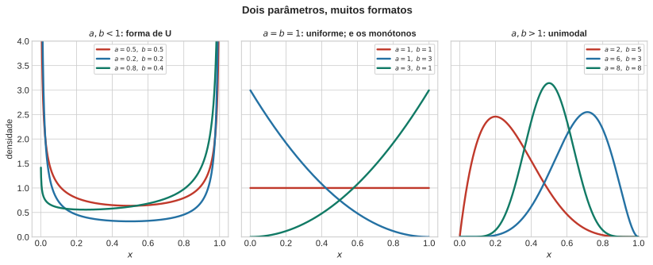
5.1 Ajustar a Beta
Não há solução em forma fechada para Beta, e é preciso resolvê-lo numericamente — Newton, ou scipy.stats.beta.fit. O problema é bem comportado (\(\ell\) é côncava nesta parametrização), mas isso não produz uma fórmula.
Note que as estatísticas suficientes são \(\sum_n \ln x_n\) e \(\sum_n \ln(1-x_n)\) — médias logarítmicas, não a média aritmética. É por isso que momentos e MLE dão respostas diferentes, e é por isso que zeros e uns exatos são fatais: \(\ln 0 = -\infty\).
Este contraste é o primeiro encontro do curso com uma distinção que retorna nas Aulas 5 e 7:
Forma fechada e otimalidade são propriedades diferentes. O estimador de momentos tem fórmula e não é eficiente; o de máxima verossimilhança é assintoticamente eficiente e não tem fórmula.
ImportanteArmadilha prática: zeros e uns exatos
Quando \(a < 1\) ou \(b < 1\), a densidade da Beta diverge nas extremidades, e uma observação exatamente igual a \(0\) ou \(1\) torna a verossimilhança infinita ou indefinida. Dados reais limitados a \([0,1]\) contêm zeros exatos com enorme frequência — taxas de inadimplência de carteiras sem eventos, proporções de uso nulo, escores saturados.
Correções honestas: (i) clipping para \([\varepsilon, 1-\varepsilon]\), declarando \(\varepsilon\); (ii) a transformação de Smithson–Verkuilen, \(x' = \big(x(N-1) + 1/2\big)/N\); (iii) modelos zero/one-inflated, que tratam as bordas como uma componente discreta separada. A pior opção é descobrir isso em silêncio no laboratório e mexer no dado até o fit parar de reclamar.
Nota rápida — a família também importa para robustez, não só para o suporte. O mesmo raciocínio de “qual família assumir” que escolheu a Beta pelo suporte tem uma segunda dimensão: o gradiente da log-verossimilhança da Gaussiana cresce linearmente com a distância do ponto ao centro e nunca satura, enquanto o da \(t\) de Student satura e vai a zero quando o ponto está muito longe — por isso a \(t\) é o ajuste padrão quando se espera outliers no próprio processo de estimação (não confundir com a detecção de anomalias do próximo bloco, que é sobre pontos novos, não sobre robustez do ajuste).
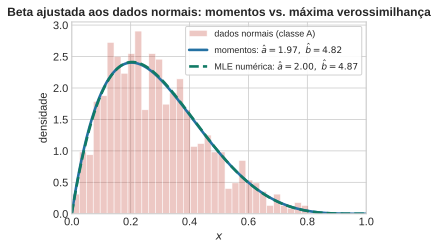
5.2 Detecção de anomalias e o limiar
Mude agora o cenário. Suponha que você não tenha exemplos rotulados de anomalia — o caso realista na maior parte das aplicações de monitoramento. Você dispõe apenas de uma amostra do comportamento normal.
O procedimento padrão: ajustar uma densidade \(p(x)\) somente aos dados normais e declarar anômalo o que cai numa região de exclusão. Duas formas usuais de definir essa região:
- cauda: \(\{x > t\}\) — apropriada quando a anomalia é direcional;
- conjunto de nível: \(\{x : p(x) < \lambda\}\) — apropriada em geral, e a única que generaliza para \(\mathbb{R}^d\).
Com a Beta ajustada, a taxa de alarme falso é exatamente calculável, porque é uma integral da densidade ajustada:
\[ \text{Tipo I} \;=\; P(x > t) \;=\; 1 - I_t(a, b), \]
onde \(I_t(a,b) = B(t; a, b)/B(a,b)\) é a função beta incompleta regularizada — a CDF da Beta. Invertendo, o limiar que produz exatamente uma taxa de alarme falso \(\alpha\) é o quantil
\[ t_\alpha = I^{-1}_{1-\alpha}(a, b). \]
Ou seja: o limiar deixa de ser um número escolhido a olho e passa a ser um quantil do modelo ajustado, com taxa de alarme falso \(\alpha\) por construção.
A limitação que o Bloco 1 tornou visível
NotaO ponto central da aula
Com uma única densidade ajustada, o erro Tipo II não está definido.
Não existe modelo do que é uma anomalia. Logo, a probabilidade de deixar passar uma anomalia — \(P(x \le t \mid \text{anômalo})\) — não pode ser calculada, porque a distribuição condicionante não existe.
Compare com o Bloco 1: lá havia duas curvas, e os dois erros eram duas áreas, ambas mensuráveis. Aqui há uma curva, e só uma das áreas existe. A assimetria não é um defeito do método — é uma consequência direta de não haver dados da segunda classe.
Este é o momento de maior retorno da aula, e ele só funciona nesta ordem. Se a detecção de anomalia viesse antes do caso de duas classes, a ausência da segunda curva não seria sentida como ausência — seria apenas a forma como as coisas são.
Três saídas honestas
1. Assumir um modelo de anomalia. A escolha mais simples é a uniforme, \(q(x) = 1\) em \([0,1]\). Nesse caso a razão de verossimilhanças fica
\[ \frac{q(x)}{p(x)} = \frac{1}{p(x)} , \]
e o teste ótimo “declarar anomalia quando \(q(x)/p(x) > \tau\)” é idêntico a “declarar anomalia quando \(p(x) < 1/\tau\)” — isto é, ao conjunto de nível.
A conclusão merece ser dita em voz alta: cortar na cauda já é supor, implicitamente, que anomalias são uniformes. A suposição estava lá o tempo todo, apenas escondida. Isso importa porque a suposição é frequentemente ruim — em muitos domínios as anomalias se concentram em regiões específicas, e uma uniforme é a pior descrição possível desse fato.
2. Estimar empiricamente. Se houver uma amostra contaminada com anomalias rotuladas, ainda que pequena e enviesada, o Tipo II pode ser estimado nela. A estimativa herda todos os vieses da amostra rotulada — e em domínios com seleção (crédito, fraude, triagem) esses vieses são severos, porque só se observa o rótulo de quem foi aprovado.
3. Aceitar e declarar. Reportar apenas a taxa de alarme falso, deixando explícito que a taxa de detecção é desconhecida. Isso é legítimo, desde que declarado. O que não é legítimo é apresentar um número de “detecção” derivado de uma suposição não anunciada.
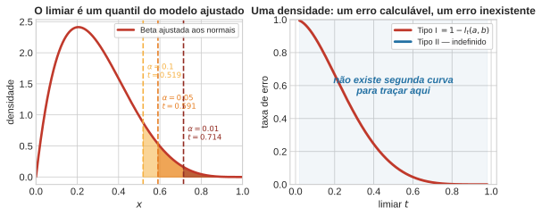
6 Conclusão
A aula inteira cabe em três frases.
Distribuição é o formato dos dados no espaço. Não é uma fórmula; a fórmula é uma escolha posterior, e escolher a fórmula é escolher o que contará como outlier.
Classificar é comparar formatos ponderados pela frequência das classes. Ignorar a ponderação é o erro que cometemos no Bloco 1 — e é o mesmo erro que a maioria dos pipelines comete ao usar \(0{,}5\) como corte de uma probabilidade prevista.
O limiar é uma decisão, e ela tem custo explícito. Custo e priori entram de forma idêntica na fronteira ótima, e ambos precisam ser declarados.
Um quarto ponto, negativo mas igualmente importante: com uma única densidade, só o Tipo I é calculável. Todo número de “taxa de detecção” produzido por um detector treinado apenas em dados normais depende de uma suposição sobre as anomalias, mesmo quando ninguém a escreveu.
Ponte para a Aula 2
Tudo isto usou uma variável. Com \(d\) variáveis, a densidade condicional de classe \(p(x \mid \mathcal{C}_k)\) passa a ser um objeto em \(\mathbb{R}^d\), e estimá-la com dados finitos deixa de ser possível sem impor estrutura: um histograma com \(M\) células por eixo exige \(M^d\) células, e o número de amostras por célula desaba exponencialmente.
Naive Bayes é a primeira suposição estrutural que o curso introduz, e é a mais brutal possível:
\[ p(x \mid \mathcal{C}_k) \;=\; \prod_{i=1}^{d} p(x_i \mid \mathcal{C}_k). \]
Ela torna o objeto estimável a um custo linear em \(d\). O preço dessa suposição — quando ela é inofensiva, quando é desastrosa, e por que o Naive Bayes classifica bem mesmo produzindo probabilidades péssimas — é o assunto da próxima aula. E lá a razão de verossimilhanças, que esteve implícita o tempo todo neste bloco, finalmente será formalizada, já no caso multidimensional.